How Do You Know?
Venture Lotto
Vertical Markets: A Trillion Dollar Opportunity
Beyond Competitive Advantage
Paradox of the Power Law in Venture Capital
The Series B Trap – And How to Avoid It
Full Archive
Foxes and Hedgehogs
Venture Lotto
Vertical Markets: A Trillion Dollar Opportunity
Beyond Competitive Advantage
Paradox of the Power Law in Venture Capital
The Series B Trap – And How to Avoid It
Full Archive
“The fox knows many things; the hedgehog knows one big thing.”
– Archilochus, 8th century BC
For centuries, writers, poets and philosophers have pondered the dichotomy of the Fox and the Hedgehog. In a business context, we first read about these characters in the book “Good to Great.” According to its author, Jim Collins,
“the fox is a cunning creature, able to devise a myriad of strategies for sneak attacks upon the hedgehog…Fast, sleek, beautiful, fleet of foot, and crafty – the fox looks like the sure winner. The hedgehog on the other hand, is a dowdier creature…He waddles along, going about his simple day, searching for lunch and taking care of his home…(but) despite the greater cunning of the fox, the hedgehog always wins.”
In our business, we’ve also thought about the Fox and the Hedgehog – and by observing them carefully, we’ve learned a few things. (The following comments may seem unconventional and a bit tongue in cheek, but based on real life characters in Silicon Valley).
Foxes tend to be serial entrepreneurs. Hedgehogs tend to stay at one company forever. (Some people must think that Hedgehogs are related to dinosaurs).
Foxes are very smart and quick on their feet. In meetings, if VCs try to nail them with tough questions, they will fire back great answers. Hedgehogs don’t like meetings (especially with VCs).
Foxes are well connected and excel at various games played in Silicon Valley and on Sand Hill Road. Naturally, Foxes are great at raising capital – they thrive in bubble markets. Hedgehogs would rather bootstrap – they do far better during the inevitable crashes.
Foxes are very social. They can be found hobnobbing with VCs at cocktail parties. Hedgehogs are too busy (or too preoccupied) to attend. If you introduce a Hedgehog to someone – for a “networking opportunity” – he might give you a funny look. If he can’t figure out how it’s relevant, he will politely blow you off.
It’s not that Hedgehogs are asocial. They can be very friendly, once you get to know them. If you’re interested, a Hedgehog may even talk your ear off – about every little (boring) nuance of his business (unless you’re a competitor, in which case he will pepper you with endless questions).
The technology business is a surfing game – you have to be ready to roll off one wave to catch the next. So maybe the nimble Fox finally has the upper hand in Silicon Valley? But those Hedgehogs are surprisingly resourceful. They are naturally curious about everything and anything related to their pursuits. They like to tinker, experiment, and learn, and if changes are required, they can snap to action in a nanosecond.
Hedgehogs may not be as clever as foxes but they obsessively measure and track everything about their business, and over time, they acquire deep, relevant knowledge and expertise. Their single minded approach may appear risky at times but they are conservative by nature. Hedgehogs don’t speculate or make foolish bets. If all their eggs are in that one proverbial basket, they follow Mark Twain’s advice – and watch that basket very carefully.
We do acknowledge that even Hedgehogs don’t always win (even though they do so in the fable). Hedgehogs can be roadkill along many dusty, windy, pothole-filled roads. There are plenty of successful Foxes also (although
Warren Bennis
, the leadership guru, observed that most turn out to be dilettantes in the long run).
The thing with Hedgehogs is that they never give up. They keep at it – and they don’t ever get bored because they just love what they do – and they have a lot of fun along the way. They can even be downright silly at times. Picture for a moment – Sam Walton leading the Wal-Mart cheer, or Warren Buffett strumming his ukulele in front of large crowds while bellowing out his favorite tunes. (Whether a Hedgehog or a Fox, it’s hard to fall in love with a bad business. To do so would be foolish at best, and in most cases, it’s practically suicidal).
Great confusion can be created at times because, once in a while, a Fox may turn into a Hedgehog. Lou Gerstner started out as a Harvard MBA and McKinsey consultant (a classic Fox profile). Then he said something “very surprising” happened along the way – he wrote that he “
fell in love with IBM
.” Maybe he turned into a Hedgehog – or perhaps he just talked and acted like one for a while.
We’ve observed that some clever Foxes do masquerade as Hedgehogs, but not the other way around. Or perhaps, some Foxes merely admire the Hedgehog. Isaiah Berlin, in his great essay hypothesized that “Tolstoy was by nature a fox, but believed in being a hedgehog.”
Like the conflicted, tormented Tolstoy, a Fox may believe in being a Hedgehog, but turning into one is really hard to do. As the Supremes sang, “you can’t hurry love.” You can’t fake it either. Likewise with Hedgehogs. They are the genuine article.
In the end, we agree with Jim Collins – that Hedgehogs are the ones who build great, lasting companies. As entrepreneurs, they are the rarest of breeds – those who can start something anew, make it work, stick with it, and build something special, and ultimately, inspire others along the way, with their determination, dedication and commitment.
We have to admit that many people are not so pleased when they first hear that we regard them as Hedgehogs. But it is perhaps the best compliment we can give. In reality, most only have “Hedgehog potential.” Becoming a genuine Hedgehog is not so easy to do. Even an amazing talent like Tiger Woods will strive most of his career to reach his goals – like winning 18 majors and more.
We’ve been investors in some of our companies for over ten years. I’m finally starting to believe that we may have a few Hedgehogs in our midsts…we’ll see what happens. If they are true Hedgehogs, they’re just getting started.
Some examples of famous Hedgehogs
– Identifiable by one name: Buddha, Darwin,
Edison
, Einstein, Freud,
Gandhi
– Technology industry hedgehogs: Scott Cook (Intuit), Michael Dell (Dell), Ray Dolby (Dolby), Dick Egan (EMC), Larry Ellison (Oracle), Dave Filo (Yahoo), Paul Galvin (Motorola), Bill Gates (Microsoft), Jack Gifford (Maxim), Jim Goodnight (SAS), Andy Grove (Intel), Bill Hewlett (HP), Irwin Jacobs (Qualcomm), Steve Jobs (Apple), Jim Morgan (Applied Materials), Gordon Moore (Intel), Ken Olsen (DEC), David Packard (HP), Hasso Plattner (SAP), Ray Stata (Analog Devices), Bob Swanson (Linear Technology), Robert Swanson (Genentech), Bernie Vonderschmidt (Xilinx), John Warnock (Adobe), Tom Watson (IBM), Stephen Wolfram (Mathematica, Wolfram-Alpha)
– Some of my favorite Hedgehogs: Sam Walton, Warren Buffett,
Rose Blumkin
(Mrs. B), Jim Casey (UPS), Jack Taylor (Enterprise Rent-A-Car), John Wooden, Forest Gump, Lieutenant Columbo, Yoda
“The essence of commitment is making a decision. The Latin root for decision is to ‘cut away from,’ as in an incision. When you commit to something, you are cutting away all your other possibilities, all your other options.”
–
The Lombardi Rules
, Rule #6 – Be Totally Committed
 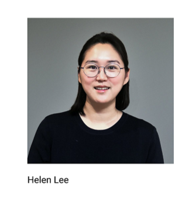
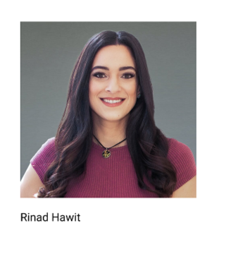
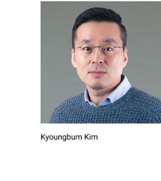
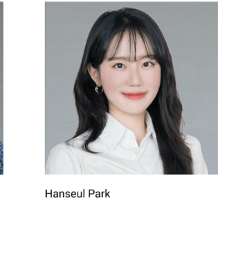
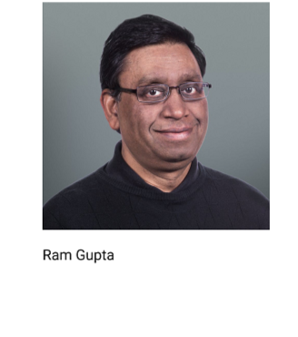
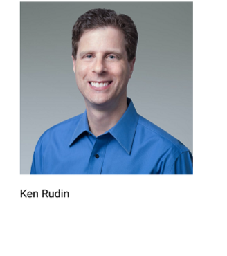
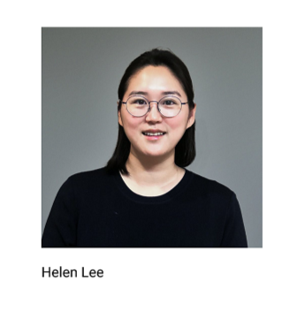
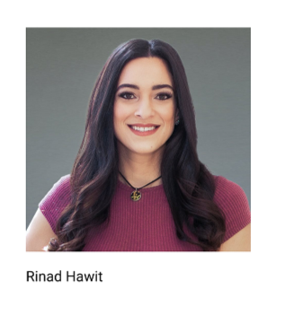
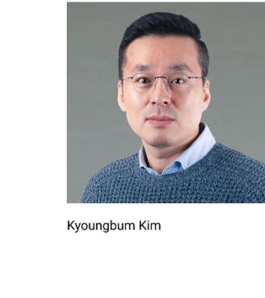
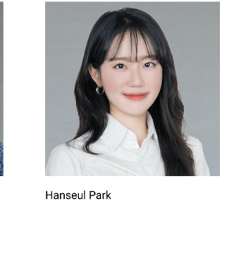
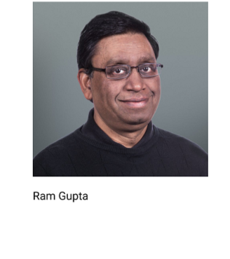
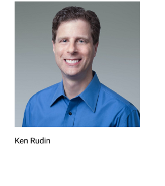